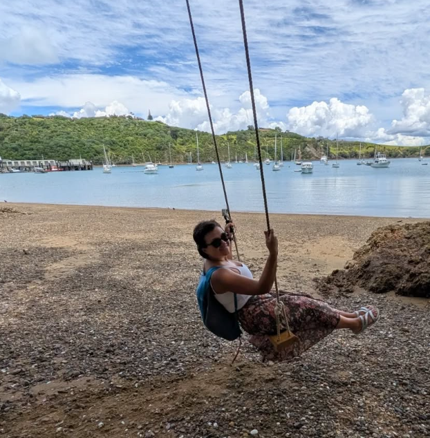

A memoir of pilgrimage, presence, and the quiet transformation that comes from walking ancient roads.

What happens when you leave the familiar behind and walk an ancient path — not to escape your life, but to find your way back to it?
Ordinary Days on an Ancient Road is a memoir of pilgrimage and presence, tracing the journey along sacred routes where centuries of footsteps have worn the stone smooth. It is a book about walking, about seeing, and about the quiet transformation that happens when you surrender the pace of modern life for the rhythm of an ancient one.
The ancient Way of St. James — a thousand years of pilgrims walking toward something they cannot name until they arrive.
The sacred trails of the Kii Peninsula — where Shinto and Buddhist traditions meet in moss-covered stone and cedar shadow.